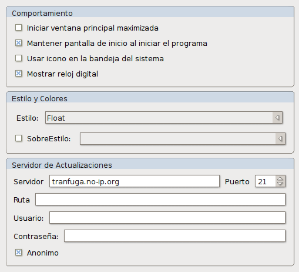
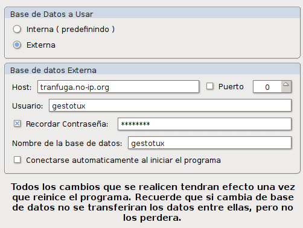
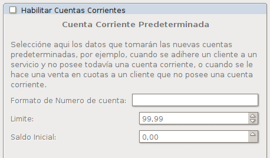
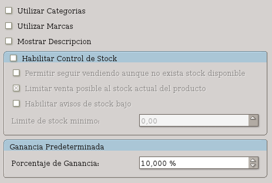
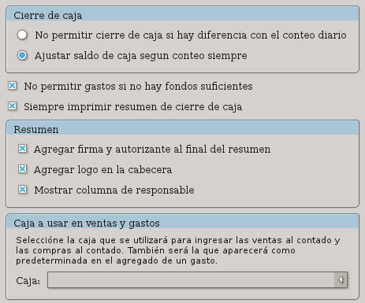
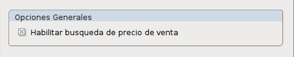

La ventana de preferencias se divide en 2 partes.
En la columna de la izquierda se puede ver un icono para cada sección de la configuración posible para el programa y en la derecha se presentarán todas las opciones que existen dentro de esa categoría.

Desde las preferencias de estilo se puede modificar lo siguiente:

Esta sección de la configuración le permitirá permutar entre una base de datos interna, la cual se utiliza como predeterminada, con una base de datos externa.
Una base de datos interna es aquella que guardará todos sus datos en un archivo dentro de su disco duro. Este archivo sólo estará disponible para la aplicación que esté ejecutando. No se recomienda utilizar este archivo de manera compartida.
Una base de datos externa es aquella que guardará todos sus datos en un servidor distinto a un archivo local. El servidor de base de datos puede estar en la misma computadora en la que ejecuta el programa o en otra distinta a través de la red.
Si elige la opción de una base de datos externa, deberá especificar los datos de la sección Base de datos externa.
La permutación entre la base de datos interna y externa no provocará pérdida de datos, pero, los datos de dicha base no estarán disponibles si se está utilizando otra. O sea, cualquier modificación que realice en la base de datos interna, no se realizará en la externa y viceversa.
La base de datos externa soporta conexión a un servidor MySQL ejecutándose en alguna máquina remota o la máquina local. Tiene la ventaja de que permite acceder a varios usuarios simultáneamente entre las mejoras de administración y copia de seguridad. Además permite búsquedas más rápidas al generarse y actualizarse automáticamente los índices.
Las bases de datos externas deberán ser creadas mediante su administrador propio y brindar el acceso a los usuarios que sean necesarios. El programa se encargará de verificar de que existan las tablas necesarias y crearlas en caso de que no existan.
Ésta opción le permite definir la frecuencia con la que aparecerá el aviso de recordatorio de realización de copia de seguridad.
La lista desplegable indicará la cantidad de tiempo que pasará luego de la última copia de seguridad realizada hasta que aparezca la notificación.
Por ejemplo, si se ha realizado la copia de seguridad el día 17/08, y se selecciona la opción 5 días, la notificación aparecerá a partir del día 22/08.
ATENCION: No es recomendable tener activada la opción Nunca. El programa no mostrará la notificación en ningún momento. Le recomendamos realizar copias de seguridad diariamente o semanalmente. |
En esta sección podrá habilitar y deshabilitar el uso de las cuentas corrientes.
Además le permitirá configurar el comportamiento de la cuenta corriente predeterminada. 
La cuenta corriente predeterminada es aquella que se crea cuando es necesaria para algún paso administrativo y el cliente no la posee habilitada. Esta nueva cuenta corriente tomará los valores definidos en esta ventana de configuración.
El formato de Número de cuenta corriente será definido por el valor que contenga el contenedor de texto.
El número de cliente se colocará en el lugar de %1.
Así, por ejemplo, si se pretende que las cuentas corrientes tengan el formato #AF2435 donde 2435 es el número de cliente, se debe ingresar #AF%1.
Si el contenedor de texto no posee nada, el formato será el mismo que el número de cliente.
Esta ventana de configuración le permitirá administrar las preferencias referentes a la administración de productos.
Al habilitar las categorías, le permitirá ordenar los productos al colocarlos en una sola categoría.
Al habilitar las marcas, podrá definir una marca para cada producto. Automáticamente cuando agregue un producto, se le ofrecerán como opción las marcas ingresadas anteriormente.
Al habilitar las descripciones se agregará un campo para agregar una descripción más larga que lo permitido por el nombre del producto para colocar información adicional.
Ésta opción habilitará el seguimiento de stock en el programa. Cuando se realice alguna venta, se descontará la cantidad vendida automáticamente y al realizar una compra, se lo agregará automáticamente.
Se pueden además habilitar la venta sin stock mediante la opción “Permitir seguir vendiendo aunque no exista stock disponible”, aunque ésta opción provocará stock negativo si se diera el caso.
Se puede limitar la cantidad a vender a través de la opción “Limitar venta posible al stock actual del producto”. Esto provocará que si se ingresa una cantidad de stock más alta de la existente, aparecerá un aviso indicando que no se posee esa cantidad de stock.
La habilitación de aviso de stock bajo, provocará que en el listado de productos se marquen con color especial aquellos productos que tienen un stock igual o menor que el stock mínimo indicado en la opción “Limite de stock mínimo”.
Esta opción permite definir el porcentaje de ganancia que se aplicará cuando se calcule el precio de venta al definir un nuevo producto.

Estas opciones nos permitirán definir la acción a tomar cuando se realiza un cierre de caja y la diferencia entre el conteo que se lleva con el programa y la diferencia de conteo de la caja real no coincide.
Si está elegida la opción “No permitir cierre de caja si hay diferencia”, el formulario de cierre de caja no permitirá realizar el cierre hasta que la diferencia no sea 0.
Si está elegida la opción “Ajustar saldo de caja según conteo siempre” cuando se realiza el cierre de caja y la diferencia entre el conteo de caja y los datos guardados en el programa no coinciden, se generará una entrada de caja que concilie los datos para realizar el cierre.
Ésta opción permite agregar o eliminar opciones del reporte de cierre de caja.
Firma y autorizante: Agrega una entrada en el reporte para que el responsable pueda firmar por el cierre de caja.
Logo en cabecera: Si esta opción esta seleccionada, se colocará el logo de el negocio en la cabecera del informe de cierre.
Mostrar columna de responsable: Mostrará la columna donde se encuentra el nombre del responsable del movimiento de caja. Esto sólo será útil si se utiliza el programa con varios usuarios distintos.
La opción de “No permitir gastos si no hay fondos suficientes” evitará que se genere un gasto nuevo si la caja seleccionada para ese gasto no posee los fondos suficientes para realizar el gasto.
La opción “Siempre imprimir resumen de caja” hará que no se consulte si desea imprimir el resumen de caja y enviará a imprimirlo automáticamente.
Por último, se puede seleccionar la caja predeterminada para registrar los gastos y ventas al contado. Esta caja recibirá automáticamente todas las operaciones de caja que correspondan a pago de recibos y facturas al contado que se realicen desde las entradas y será la caja seleccionada al realizar un gasto.

La opción de “Habilitar búsqueda de precio de venta” le permite colocar automáticamente el precio de venta del producto guardado en la base de datos al agregar el mismo a la lista de una factura o presupuesto. Si ésta opción no esta seleccionada, simplemente no se colocará el precio.